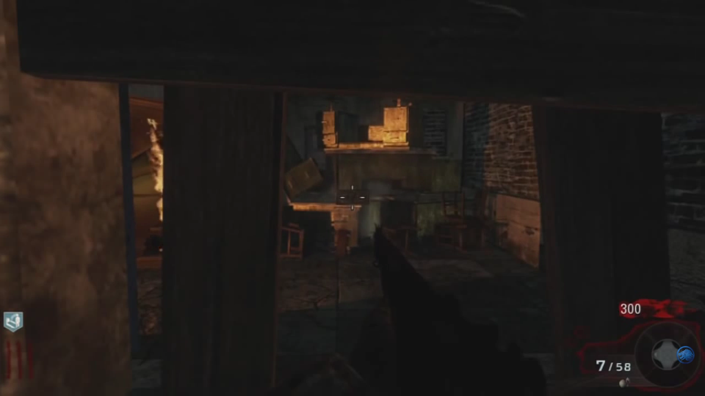

Nacht Der Untoten
Radio Music
Melee or Shoot the Radio next to the Mystery Box
Undone (BO1 & BO3 Only)
Shoot 3 Explosive Barrels
Verruckt
Radio Music (BO1 Only)
Shoot the Radio on a Desk Upstairs on the American Side

Lullaby for a Dead Man
Flush the Left Toilet Upstairs 3 Times
Shi No Numa
Radio Music
Activate all Radios on the Map
-3 in the Starting Hut
-Storage Hut
-Doctors Quarters
The One
Interact with the Phone in the Comm Room
Der Reise
Beauty of Annihilation
Activate 3 Green Test Tubes
-Teleporter Room Z-B: On a Filing Cabinet next to the Chalkboard
-Animal Testing: On Top of the Shelf next to the Stairs
-Animal Testing: On a Cabinet next to the Chalkboard
Fly Trap Easter Egg
Activate Pack a Punch
Shoot the Red Button outside the Map between Animal Testing and Spawn with a Pap'd Weapon
Shoot the 3 Teddy Bears around the Map
-In the open Furnace in the Furnace Room, under Teleporter A
-Above the Power Switch, on a Balcony overlooking the Courtyard
-In a Cage in the Animal Testing, next to the Trench Gun Wallbuy